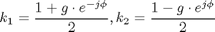
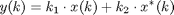

Contents
IQImbalClass
Parent class: AttributeClass. I/Q imbalance in RF/analog blocks.
Properties
Inherited Properties
AttributeClass * Name - Object name
Methods
g
Amplitude error
phi
Phase error
k1
Imbalance parameter
k2
Imbalance parameter
IRR
Image Rejection Rate
IMG
Image Suppression
IQImbalClass@IQImbalClass
OBJ=IQImbalClass(NAME)
IQImbalClass object contructor. The IQImbalClass/Name property is set to NAME.
set.g@IQImbalClass
OBJ=set.g(OBJECT,VALUE)
Method invited on the write acces of property g. First the value is written to the property, then update is executed. The return OBJ is the updated copy of the object.
set.phi@IQImbalClass
OBJ=set.phi(OBJECT,VALUE)
Method invited on the write acces of property phi. First the value is written to the property, then update is executed. The return OBJ is the updated copy of the object.
effect@IQImbalClass
I/Q imbalance is a specific non-ideality of quadrature RF tuners. It is mainly caused by amplitude and phase errors in the local oscillation. If g is the amplitude and phi is the phase error, then the imbalance parameters are defined as:

With the imbalance parameters the effect of I/Q mismatch is:

where x and y are complex valued signals.
OUTP=effect(OBJECT, INP)
Apply the I/Q imbalance in the signal INP and the result is returned OUTP. Signals INP and OUTP are recommened to be an object derived from SignalClass.
update@IQImbalClass
update(OBJECT)